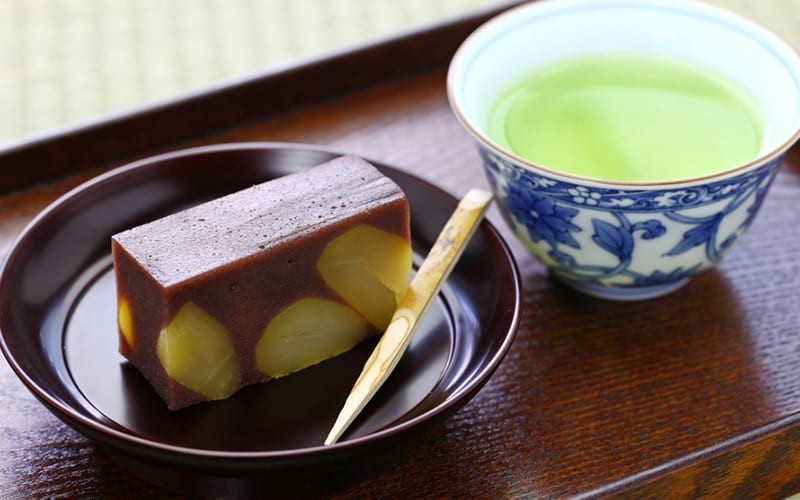
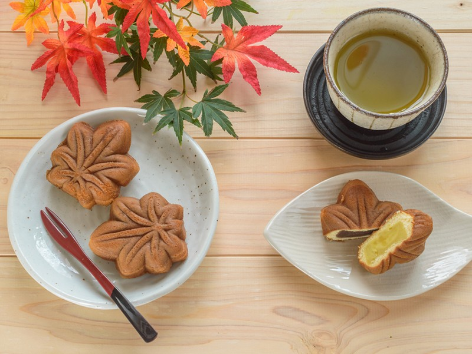
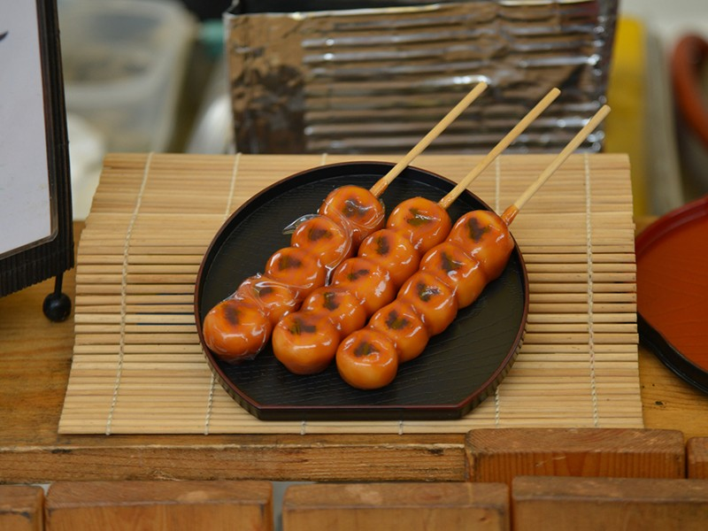
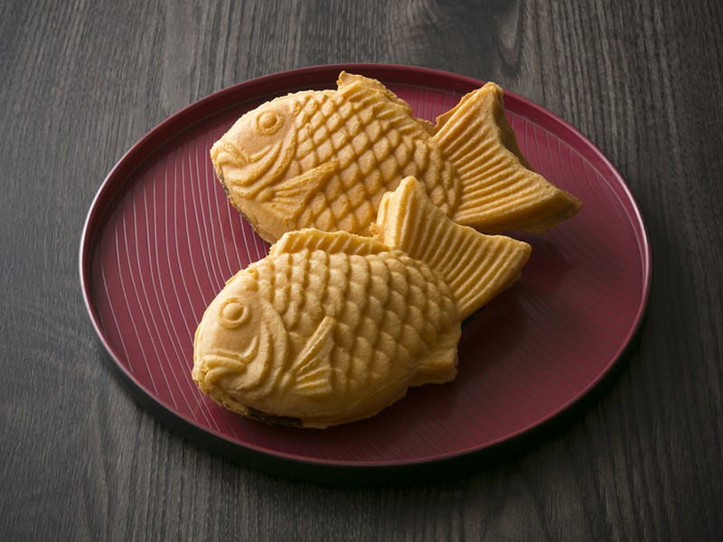

|  |
Описание: ёкан продается в виде твёрдого брикета и представляет собой компактное желе из пасты бобов адзуки, агар-агара и сахара. Также ёкан – популярный сувенир, так как у него долгий срок хранения даже вне холодильника (до тех пор, пока вы не откроете упаковку). Сладость рекомендуют брать с собой в походы и класть в специальный рюкзак на случай бедствия, так как продукт хранится долго и его легко можно достать и есть на ходу. |
Ёкан - 5$ |
|  |
Описание: обычно выглядят как круглые пирожки. Это сладость из пшеничного хлеба с начинкой из пасты адзуки, которую либо парят, либо жарят во фритюре. |
Мандзю - 7$ |
|  |
Описание: эту сладость из чайных домиков можно увидеть в любой дораме или аниме о Японии периода Эдо. Несмотря на то, что это популярная сидячая закуска, благодаря палочке её можно есть и на ходу. Данго бывают разной формы, неизменно лишь то, что это группа круглых жевательных моти, политых соусом. |
Данго - 12$ |
|
Описание: сэнбэ бывает сладким и солёным, это классические хрустящие крекеры, которые любят люди всех возрастов. Солёный сэнбэ чаще всего делают из рисовой муки и пекут или жарят на огне. Сладкий, который берёт своё начало в Таньском Китае – из пшеничной или картофельной муки. |
Сэнбе - 15$ |
|  |
Описание: популярная уличная еда на всех фестивалях – пирожок в форме рыбы с начинкой. Таяки появились примерно во время эпохи Мэйдзи, но чем-то похожи на имагаваяки из периода Эдо. По сути тесто такое же, как для блинчиков или вафель, а начинкой обычно выступает паста адзуки, но есть и другие варианты (о них чуть ниже). |
Тайяки - 10$ |